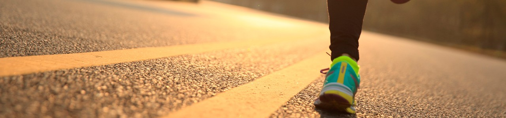
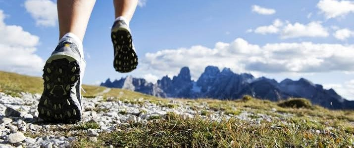

Errepiderako zapatilak
Hirian, parkean eta bide lauetan korrika egiteko.
Ikusi errepideko katalogoaKORRIKARAKO DENDA · DONOSTIA
Urrats bakoitzaz gozatzeko zapatila erosoak aurkitzen lagunduko dizugu.
Ikusi zapatilak ↓Aukeratu zapatila mota bat, eta ikusi lau modelo dituen katalogoa.

Hirian, parkean eta bide lauetan korrika egiteko.
Ikusi errepideko katalogoa
Mendi-bideetan eta lur irregularrean ibiltzeko helduleku gehiagorekin.
Ikusi mendiko katalogoa
Astean zehar korrika egiteko aukera eroso eta moldakorra.
Ikusi entrenamenduko katalogoaGURI BURUZ
Kilometro Zero Donostiako zapatila-denda asmatu bat da. Korrika egitea gustatzen zaigu, eta beste pertsonei zapatilak aukeratzen lagundu nahi diegu.